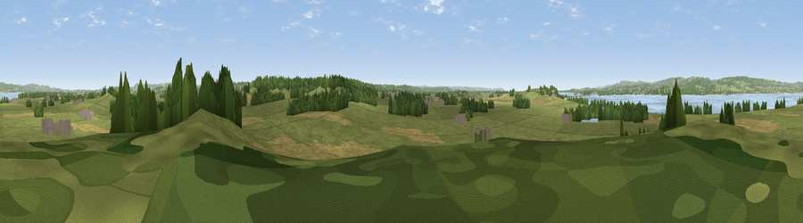

Viewpoint near Littleton-upon-Severn
#21692 in England · top 37% of its area beats it · near Littleton-upon-SevernThe view, rendered

A 360° render of this exact spot computed from the terrain model, tree cover and land cover — summer colours, afternoon light, calibrated against photographs of famous viewpoints. Real trees, hedges and buildings will differ in detail.
The panorama
Grey silhouette: terrain skyline in each direction (720 bearings, Earth curvature and refraction included). Dashed green: skyline with trees (+15 m) and buildings (+8 m) as obstacles. Blue strip: how far the ground is visible on each bearing.
Where the view opens
Wedge length = distance to the farthest visible ground on that bearing (vegetation-aware). Rings at 10, 25 and 50 km.
What fills the view
67% grassland · 16% cropland · 9% woodland · 7% water · 2% built-up
Angular shares of the visible panorama (visual magnitude), not map area. Landscape diversity 0.45 (0–1 Shannon).
Key numbers
More beautiful places nearby
The staircase of upgrades: each row has a higher view potential than everything closer. Driving times are estimates from straight-line distance, calibrated against real road routing — check an actual route before setting out.
| Place | Direction | Drive | Score |
|---|---|---|---|
| Viewpoint near Littleton-upon-Severn | SSE · 1 km | ~4 min | 52.6 |
| Viewpoint near Aust | WSW · 2 km | ~6 min | 59.4 |
| Viewpoint near Aust | WSW · 3 km | ~8 min | 60.1 |
| Viewpoint near Tidenham | NW · 7 km | ~14 min | 64.6 |
| Viewpoint near Almondsbury | S · 8 km | ~16 min | 68.3 |
| Viewpoint near Hewelsfield | NNW · 10 km | ~19 min | 69.6 |
| Viewpoint near Hewelsfield | NNW · 11 km | ~20 min | 70.7 |
| Viewpoint near North Nibley | ENE · 15 km | ~27 min | 76.3 |
51.61661, -2.58165 · source: screening · position refined by local search. Computed location — check access rights before visiting.